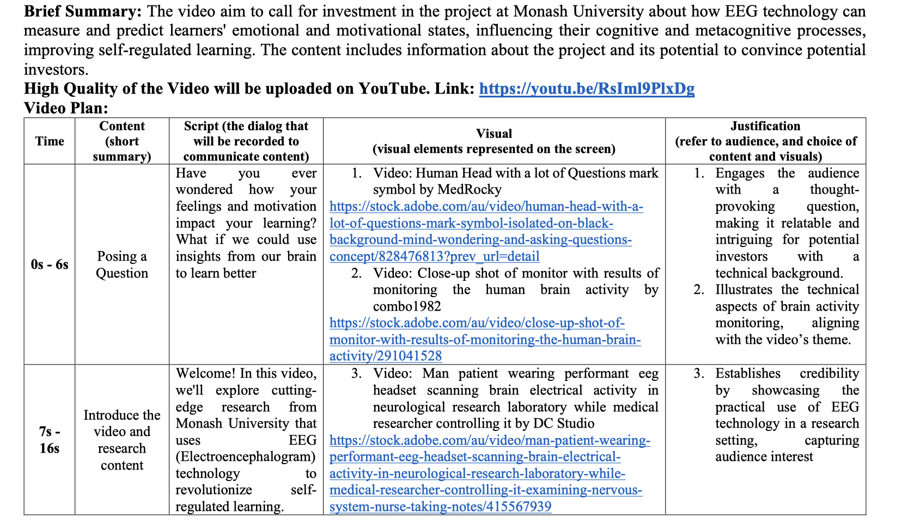

Research Communication Video
FIT5125 - IT Research Method · Monash University | 2024

Overview
A 90-second research investment pitch video produced as part of FIT5122 IT Research Methods at Monash University. The task required synthesising an existing Monash research project — on how EEG (electroencephalogram) technology can measure and predict learners' emotional and motivational states to improve self-regulated learning — and communicating its value proposition to a non-technical investor audience through structured visual storytelling.
What was the challenge?
The source research was dense and technical, spanning EEG signal processing, cognitive and metacognitive learning processes, and classification models with F1 scores above 0.73. The challenge was to distil this into a compelling 90-second narrative that a potential investor — not a neuroscience researcher — could follow, understand, and act on, while preserving the study's scientific credibility.
What I did
- Analysed the source research paper and extracted the core value proposition: real-time, objective measurement of learner engagement, stress, and interest via wearable EEG — addressing known limitations of self-report and think-aloud methods.
- Wrote a structured video script with five segments (hook → introduction → problem → solution → evidence), each mapped to specific visual assets and timed to fit the 90-second constraint.
- Produced a detailed video treatment document specifying script, visuals, stock footage sources, and justification for each creative decision — grounding every choice in audience analysis and communication theory.
- Edited the final video in iMovie, combining licensed stock footage, on-screen text overlays, statistical figures from the original paper, and a voiceover narration to create a cohesive investor pitch.
Tools & skills
iMovie · Video Production · Scriptwriting · Research Synthesis · Stakeholder Communication · Visual Storytelling · Audience Analysis
Outcome
The final video distilled a complex neuroscience-education research project into a clear, engaging 90-second pitch that balanced scientific rigour with accessibility. The exercise reinforced that communicating data-driven findings to non-technical stakeholders is itself a skill — one that requires deliberate structure, audience empathy, and visual thinking beyond the analysis itself.
Watch the Video

← Back to Projects